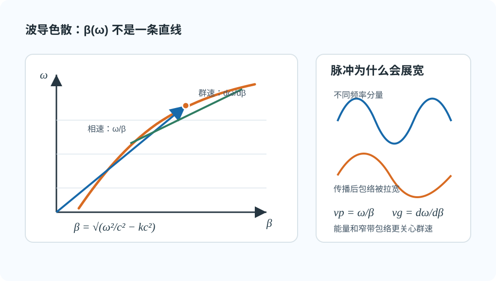

02 · 色散、相速与群速§
本节你要能回答什么§
- 色散在数学上指什么？波导里 $\beta(\omega)$ 为何不是 $\omega/c$？
- 相速 $v_{\mathrm p}$ 与 群速 $v_{\mathrm g}$ 各描述什么？窄脉冲展宽与谁更直接相关？
- 无耗空气填充时，教材常见的 $v_{\mathrm p}v_{\mathrm g}=c^2$ 在什么前提下使用？
直觉：频率走了不同的「轴向相位节奏」§
色散：传播常数 $\beta$ 对 $\omega$ 非线性，即 $\beta(\omega)$ 不是与 $\omega$ 简单成正比。不同频率分量相速不同，窄脉冲频谱宽时会展宽。
想象一个短脉冲其实由一小包频率分量叠起来。若这些分量沿 $z$ 方向的节奏完全同步，脉冲形状就比较稳；若高一点、低一点的频率跑出不同节奏，包络会被拉宽，这就是色散在信号上的后果。

图：在 $\omega$-$\beta$ 图上，相速看原点到工作点的斜率，群速看工作点切线的斜率；曲线弯了，就会有色散。
定义与符号表§
波导中（空气、无耗）：
$$ \beta=\sqrt{k^2-k_{\mathrm c}^2}=\sqrt{\frac{\omega^2}{c^2}-k_{\mathrm c}^2}, $$
其中 $k_{\mathrm c}$ 由几何与模确定，与 $\omega$ 无关。故 $\beta$ 随 $\omega$ 非线性变化 —— 即使 $\varepsilon$ 为常数也有色散（结构色散，详见 03）。
相速（沿 $z$ 等相位面移动速度，定义式）：
$$ v_{\mathrm p}=\frac{\omega}{\beta}. $$
群速（窄带包络，能量传播常用）：
$$ v_{\mathrm g}=\frac{\mathrm d\omega}{\mathrm d\beta}. $$
影响：脉冲展宽、信号畸变；分析能量传输时用 $v_{\mathrm g}$ 更贴切。
常用关系（无耗空气填充，教材推导）：
$$ v_{\mathrm p}v_{\mathrm g}=c^2 $$
在无耗、均匀、材料本身无频散的填充介质中，可把 $c$ 换成介质中的相速度 $u=1/\sqrt{\mu\varepsilon}$，即 $v_{\mathrm p}v_{\mathrm g}=u^2$。如果教材考虑损耗或材料色散，关系式会有修正，按题设口径处理。
由上式也能看出一个常见但不矛盾的现象：理想模型里 $v_{\mathrm p}$ 可能大于 $c$，但它不是能量或信息速度；能量传输更接近看 $v_{\mathrm g}$。
推导步骤（概念线）§
- 写出 $\beta=\sqrt{k^2-k_{\mathrm c}^2}$，指出 $k=\omega/c$ 随 $\omega$ 变，$k_{\mathrm c}$ 不变。
- 说明 $\beta(\omega)$ 非线性 $\Rightarrow$ 色散。
- 写出 $v_{\mathrm p},v_{\mathrm g}$ 定义与物理分工；点出脉冲展宽与频带、群速的联系。
- 若题目要求关系式，再在“无耗、均匀、材料无频散”的前提下写 $v_{\mathrm p}v_{\mathrm g}=c^2$ 或 $u^2$。
与截止、色散、模式指标的挂钩§
- 近截止：$\beta\to 0$，$v_{\mathrm p}=\omega/\beta$ 在理想无耗模型下趋于很大，需结合教材对能量速度与损耗的讨论。
- 同一波导不同模 $k_{\mathrm c}$ 不同，色散曲线不同。
易错点§
- 认为「真空 $\varepsilon_0,\mu_0$」就没有色散 —— 波导中仍有 $\beta=\sqrt{k^2-k_{\mathrm c}^2}$ 带来的色散。
- 把 $v_{\mathrm p}$ 当能量速度乱用；脉冲、能量传输优先想 $v_{\mathrm g}$。
- 忘记 $v_{\mathrm p}v_{\mathrm g}=c^2$ 的前提，把它套到有损或材料频散情形。
Mini 自检题§
Q1：$k_{\mathrm c}$ 固定、$\omega$ 增大时，$\beta$ 一般增大还是减小？
提示：$k=\omega/c$ 增大，$k^2-k_{\mathrm c}^2$ 增大 $\Rightarrow$ $\beta$ 一般增大（导行区内）。
Q2：色散是否必然意味着材料 $\varepsilon$ 随频率变化？
提示：否；波导结构色散可在 $\varepsilon$ 常数时存在。见下一节。
相关链接§
- 上一节：01-三种波长-lambda0-lambdac-lambdag.md
- 下一节：03-波导色散与光学色散.md
- 作业 · 色散段落：第三次作业解答 · Lec11～12